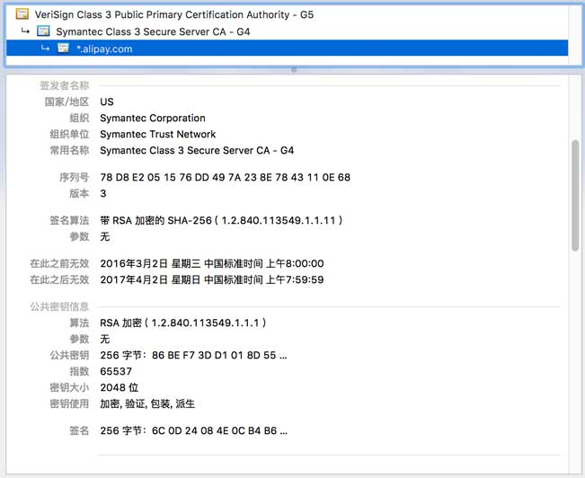

加解密流程及安全相关展开
更新日期:
###加解密流程###
一般应用会用到两种加密技术：对称加密和非对称加密。所谓对称加密就是数据发送接收双方加密解密用的是相同的密钥。由于对称加密技术加解密的速度相对于非对称加密有明显的优势，所以传输数据一般使用对称加密。因为对称加密的密钥是在易信客户端生成的，需要加密之后传给服务器端，对该密钥的加密使用了RSA非对称加密。在非对称加密体系中密钥分公钥和私钥，公钥和私钥都可以对明文进行加密，但只有私钥可以对密文进行解密。一般服务器端存了私钥，在客户端存了公钥，传输对称加密密钥的时候客户端使用公钥对其加密然后传输给服务器。当服务器端收到客户端发过来的密钥之后，双方就可以对传输的数据进行加解密。
目前开发的App加密流程如下：
- 客户端生成对称加密密钥
- 客户端使用RSA公钥对密钥加密传输给服务器
- 服务器使用私钥解码出传过来的密钥，双方使用协商好的密钥对传输的数据进行加解密
对于客户端来说公钥被窃取了也没有多大的问题，但是保存在服务器的私钥被窃取了那整个加密系统就形同虚设了。必须要跟换私钥公钥，重新发布客户端让用户升级。
###服务器下发公钥###
为了避免重新发布客户端并且强制用户升级，我们会想让服务器下发公钥。一旦让服务器下发公钥就会引入一个更大的安全隐患，那就是可能遭到中间人攻击(Man-in-the-middle attack)。我们用一个现实中的场景来解释中间人攻击：我们客户端连接到一个被黑客控制的路由器，所有的数据传输都被监控，服务器传输给客户端的公钥被篡改了，客户端拿到的不是服务器下发的公钥而是黑客生成的公钥（黑客拥有私钥），客户端使用假的公钥加密数据，黑客用手中的私钥解密密文然后，再用截获的真正的公钥加密数据传输给服务器。这么一来客户端和服务器端都能正确的加密解密，但传输的数据已经被出于中间的黑客掌握。
###https是否真的安全###
https采用SSL/TLS协议来保证数据传输的安全。使用https通讯之前客户端和服务器需要使用SSL/TLS协议来进行握手，步骤如下：
- 服务器向客户端发送证书，证书中包括公钥及一些其他信息，其中最重要的是还包括了一份该证书的电子签名
- 客户端通过电子签名验证该证书的真伪
- 证书验证通过后，客户端就和服务器协商对称加密密钥，所有的协商数据都通过证书中的公钥加密
可以看到整个流程跟我们上节提到的服务器下发公钥的流程基本上是一样的，不同的是多了一个证书真伪验证的过程。

上图是支付宝下发给浏览器的证书，我们可以看看到最重要的三个域：
- 证书签发机构Certificate Authorities (CAs)
- 公钥
- 签名
从中我们可以看到电子签名是需要第三方“可信赖”的机构签的（显然需要钱）。
电子签名也是非对称加密技术的应用，一般使用流程如下：
- 计算需要签名数据的hash值，对该该hash值使用私钥加密生成电子签名
- 验证者使用公钥解码出hash值，并且与自己对该数据计算的hash值进行比对，如果相同则可以认为数据没有被篡改
从上面流程可以看到要验证电子签名的真伪，需要一把签名机构给的公钥，这么一来问题又来了，这个公钥怎么传输？如果通过网络传输不又要被中间人攻击了吗？这把公钥是不通过网络传输来获取的，而是由浏览器厂商打包到浏览器中随着浏览器一起发布（一般浏览器会打包进差不多600多家签名机构的根证书），在验证签名的过程中浏览器会根据证书中的签发机构信息找到该机构的根证书，再利用该根证书中的公钥来验证签名。
看起来一切都很完美，无懈可击啊！但真的是这样吗？我们可以看到整个https的安全是建立在CAs和浏览器开发厂商之上的，假如某个CA机构被黑或者迫于政府的压力签了一个假冒的证书出来（假冒谷歌或者其他的……），又或者浏览器开发商迫于政府的压力对某些假冒的证书开绿灯。这些并不是异想天开的事情，针对https的攻击每天都在发生，参见[1][2][3][4]。
所以如果你在干秘密的事情，https并不一定可靠！
有什么机制来替换CAs，这值得思考。
引用:
[1] P. Eckersley, “How secure is HTTPS today? How often is it attacked?”, Electronic Frontier Foundation, https://www.eff.org/deeplinks/2011/10/how-secure-https-today (6 December 2013)
[2] “Spooks break most Internet crypto, but how?”, Ars Technica,
[3] “Iranian Man-in-the-Middle Attack Against Google Demonstrates Dangerous Weakness of Certificate Authorities”, Electronic Frontier Foundation,
[4] “New NSA Leak Shows MITM Attacks Against Major Internet Services”, Schneier on Security, https://www.schneier.com/blog/archives/2013/09/new_nsa_leak_sh.html (6 December 2013).